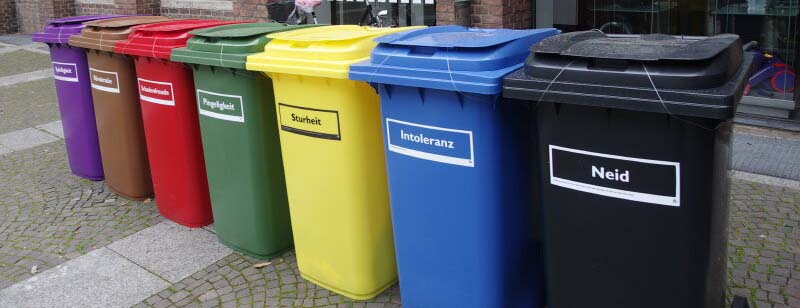
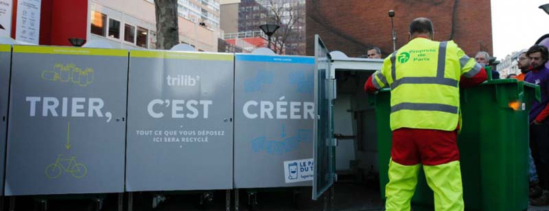

В стране создана одна из самых эффективных систем борьбы с коммунальным мусором. Она начала складываться еще с 80-х годов, сейчас во всех немецких городах действует система глубокой сортировки мусора по установленным правилам. На каждой придомовой площадке для отходов устанавливается минимум три контейнера:
Специальные общественные баки на каждой улице установлены для приема стеклянных банок и другой тары. Старую одежду можно отдать в благотворительную организацию, для приема батареек предусмотрены коробки в магазинах. Особое отношение к пластиковым бутылкам и другой таре от напитков. Их стоимость изначально включена в цену напитка, и, чтобы вернуть эту переплату, покупатель должен сдать емкость в специальный фандомат в магазине. Несоблюдение этого правила просто приведет к потере денег. Также предусмотрены крупные штрафы за нарушение правил обращения с мусором: выброшенные в неположенном месте отходы могут стоить нарушителю до 75 евро. Переработка мусора не только благоприятно влияет на экологическую ситуацию, но и способствует улучшению экономики страны: ежегодный оборот в этом бизнесе достигает 70 миллиардов евро, а на мусороперерабатывающих предприятиях работают более 250 тыс. человек. Прибыльность таких предприятий продолжает расти, и они никогда не останутся без работы.
Во Франции действует концепция ответственного отношения к природным ресурсам и мусору, так как проблема приняла одновременно экономический и политический характер. Для борьбы с загрязнением окружающей среды предусмотрены следующие меры:
Специальные общественные баки на каждой улице установлены для приема стеклянных банок и другой тары. Старую одежду можно отдать в благотворительную организацию, для приема батареек предусмотрены коробки в магазинах. Особое отношение к пластиковым бутылкам и другой таре от напитков. Их стоимость изначально включена в цену напитка, и, чтобы вернуть эту переплату, покупатель должен сдать емкость в специальный фандомат в магазине. Несоблюдение этого правила просто приведет к потере денег. Также предусмотрены крупные штрафы за нарушение правил обращения с мусором: выброшенные в неположенном месте отходы могут стоить нарушителю до 75 евро. Переработка мусора не только благоприятно влияет на экологическую ситуацию, но и способствует улучшению экономики страны: ежегодный оборот в этом бизнесе достигает 70 миллиардов евро, а на мусороперерабатывающих предприятиях работают более 250 тыс. человек. Прибыльность таких предприятий продолжает расти, и они никогда не останутся без работы.
